Visualization with scCulturePredict
Niccolò Bianchi
2025-09-11
Source:vignettes/scCulturePredict-visualization.Rmd
scCulturePredict-visualization.RmdIntroduction
This vignette demonstrates visualization capabilities of the
scCulturePredict package for exploring single-cell RNA-seq
data and prediction results.
Creating Example Data
# Create simple mock data for visualization
create_viz_data <- function(n_genes = 200, n_cells = 150) {
# Create count matrix
counts <- matrix(rpois(n_genes * n_cells, lambda = 5),
nrow = n_genes, ncol = n_cells)
# Simple gene and cell names
rownames(counts) <- paste0("Gene", seq_len(n_genes))
colnames(counts) <- paste0("Cell", seq_len(n_cells))
# Create metadata with multiple variables
metadata <- data.frame(
condition = rep(c("Control", "Treatment_A", "Treatment_B"), each = n_cells/3),
batch = rep(c("Batch1", "Batch2"), length.out = n_cells),
n_genes = colSums(counts > 0),
n_counts = colSums(counts),
percent_mt = runif(n_cells, 0, 20),
row.names = colnames(counts)
)
# Create Seurat object
seurat_obj <- CreateSeuratObject(
counts = counts,
meta.data = metadata,
min.cells = 3,
min.features = 10
)
# Process the data
seurat_obj <- NormalizeData(seurat_obj, verbose = FALSE)
seurat_obj <- FindVariableFeatures(seurat_obj, nfeatures = 100, verbose = FALSE)
seurat_obj <- ScaleData(seurat_obj, verbose = FALSE)
seurat_obj <- RunPCA(seurat_obj, npcs = 20, verbose = FALSE)
seurat_obj <- RunUMAP(seurat_obj, dims = 1:10, verbose = FALSE)
# Add UMAP coordinates to metadata
seurat_obj@meta.data$UMAP_1 <- Embeddings(seurat_obj, "umap")[, 1]
seurat_obj@meta.data$UMAP_2 <- Embeddings(seurat_obj, "umap")[, 2]
# Add mock predictions
seurat_obj@meta.data$predicted_condition <- sample(
c("Control", "Treatment_A", "Treatment_B"),
n_cells, replace = TRUE
)
seurat_obj@meta.data$prediction_confidence <- runif(n_cells, 0.5, 1.0)
return(seurat_obj)
}
# Create the data
viz_data <- create_viz_data(n_genes = 200, n_cells = 150)
print(viz_data)
#> An object of class Seurat
#> 200 features across 150 samples within 1 assay
#> Active assay: RNA (200 features, 100 variable features)
#> 3 layers present: counts, data, scale.data
#> 2 dimensional reductions calculated: pca, umapQuality Control Visualizations
QC Metrics Distribution
# Extract metadata for plotting
meta_data <- viz_data@meta.data
# Create QC visualization
p1 <- ggplot(meta_data, aes(x = condition, y = n_genes, fill = condition)) +
geom_violin(alpha = 0.7) +
geom_boxplot(width = 0.2, outlier.shape = NA) +
theme_minimal() +
labs(title = "Genes per Cell by Condition",
x = "Condition", y = "Number of Genes") +
scale_fill_brewer(palette = "Set1") +
theme(legend.position = "none")
p2 <- ggplot(meta_data, aes(x = condition, y = percent_mt, fill = condition)) +
geom_violin(alpha = 0.7) +
geom_boxplot(width = 0.2, outlier.shape = NA) +
theme_minimal() +
labs(title = "Mitochondrial % by Condition",
x = "Condition", y = "MT %") +
scale_fill_brewer(palette = "Set1") +
theme(legend.position = "none")
p3 <- ggplot(meta_data, aes(x = n_counts, y = n_genes, color = percent_mt)) +
geom_point(alpha = 0.6, size = 2) +
theme_minimal() +
labs(title = "Count-Gene Relationship",
x = "Total Counts", y = "Total Genes",
color = "MT %") +
scale_color_gradient(low = "blue", high = "red")
p4 <- ggplot(meta_data, aes(x = batch, fill = condition)) +
geom_bar(position = "dodge") +
theme_minimal() +
labs(title = "Cell Distribution across Batches",
x = "Batch", y = "Count") +
scale_fill_brewer(palette = "Set1")
# Combine plots using base R graphics
par(mfrow = c(2, 2))
# Note: For actual combination, use patchwork or gridExtra packages
# Here we'll display them individually
print(p1)
print(p2)
print(p3)
print(p4)Dimensionality Reduction Visualizations
UMAP Visualization
# UMAP colored by condition
p_condition <- ggplot(meta_data, aes(x = UMAP_1, y = UMAP_2, color = condition)) +
geom_point(size = 2, alpha = 0.7) +
theme_minimal() +
labs(title = "UMAP by Condition",
x = "UMAP 1", y = "UMAP 2") +
scale_color_brewer(palette = "Set1")
print(p_condition)
# UMAP colored by batch
p_batch <- ggplot(meta_data, aes(x = UMAP_1, y = UMAP_2, color = batch)) +
geom_point(size = 2, alpha = 0.7) +
theme_minimal() +
labs(title = "UMAP by Batch",
x = "UMAP 1", y = "UMAP 2") +
scale_color_brewer(palette = "Dark2")
print(p_batch)
# UMAP colored by gene count
p_genes <- ggplot(meta_data, aes(x = UMAP_1, y = UMAP_2, color = n_genes)) +
geom_point(size = 2, alpha = 0.7) +
theme_minimal() +
labs(title = "UMAP by Gene Count",
x = "UMAP 1", y = "UMAP 2",
color = "Genes") +
scale_color_gradient(low = "darkblue", high = "yellow")
print(p_genes)PCA Visualization
# Get PCA coordinates
pca_coords <- Embeddings(viz_data, "pca")[, 1:4]
meta_data$PC1 <- pca_coords[, 1]
meta_data$PC2 <- pca_coords[, 2]
# PCA plot
p_pca <- ggplot(meta_data, aes(x = PC1, y = PC2, color = condition)) +
geom_point(size = 2, alpha = 0.7) +
theme_minimal() +
labs(title = "PCA: PC1 vs PC2",
color = "Condition") +
scale_color_brewer(palette = "Set1")
print(p_pca)
# Variance explained
pca_var <- Stdev(viz_data, reduction = "pca")^2
var_explained <- pca_var / sum(pca_var) * 100
var_df <- data.frame(
PC = 1:min(20, length(var_explained)),
Variance = var_explained[1:min(20, length(var_explained))]
)
p_var <- ggplot(var_df, aes(x = PC, y = Variance)) +
geom_bar(stat = "identity", fill = "steelblue") +
geom_line(color = "red") +
theme_minimal() +
labs(title = "PCA Variance Explained",
x = "Principal Component",
y = "Variance Explained (%)")
print(p_var)Pathway Analysis Visualization
# Create mock pathway activity data
n_pathways <- 10
pathway_names <- c("Glycolysis", "TCA_Cycle", "Cell_Cycle", "DNA_Repair",
"Translation", "Oxidative_Stress", "Metabolism",
"Signaling", "Transport", "Biosynthesis")
# Create mock pathway matrix
pathway_matrix <- matrix(rnorm(ncol(viz_data) * n_pathways),
nrow = ncol(viz_data),
ncol = n_pathways)
colnames(pathway_matrix) <- pathway_names[1:n_pathways]
rownames(pathway_matrix) <- colnames(viz_data)
# Calculate mean pathway activity by condition
pathway_summary <- data.frame(
pathway_matrix,
condition = viz_data$condition
) %>%
group_by(condition) %>%
summarise(across(everything(), mean))
# Reshape for plotting
pathway_long <- tidyr::pivot_longer(pathway_summary,
cols = -condition,
names_to = "Pathway",
values_to = "Activity")
# Create heatmap-style plot with ggplot2
p_pathway <- ggplot(pathway_long, aes(x = Pathway, y = condition, fill = Activity)) +
geom_tile() +
scale_fill_gradient2(low = "blue", mid = "white", high = "red", midpoint = 0) +
theme_minimal() +
theme(axis.text.x = element_text(angle = 45, hjust = 1)) +
labs(title = "Mean Pathway Activity by Condition",
x = "Pathway", y = "Condition")
print(p_pathway)Prediction Visualization
Confusion Matrix
# Create confusion matrix
actual <- viz_data$condition
predicted <- viz_data$predicted_condition
conf_mat <- table(Actual = actual, Predicted = predicted)
conf_mat_prop <- prop.table(conf_mat, margin = 1)
# Convert to data frame for plotting
conf_df <- as.data.frame(conf_mat_prop)
# Create heatmap
p_conf <- ggplot(conf_df, aes(x = Predicted, y = Actual, fill = Freq)) +
geom_tile() +
geom_text(aes(label = sprintf("%.2f", Freq)), color = "white", size = 4) +
scale_fill_gradient2(low = "blue", mid = "white", high = "red",
midpoint = 0.5, limits = c(0, 1)) +
theme_minimal() +
labs(title = "Confusion Matrix (Normalized)",
x = "Predicted", y = "Actual",
fill = "Proportion") +
theme(axis.text.x = element_text(angle = 45, hjust = 1))
print(p_conf)Prediction Confidence
# Confidence distribution
p_conf_dist <- ggplot(meta_data, aes(x = prediction_confidence)) +
geom_histogram(bins = 20, fill = "steelblue", alpha = 0.7) +
theme_minimal() +
labs(title = "Prediction Confidence Distribution",
x = "Confidence Score", y = "Count") +
geom_vline(xintercept = mean(meta_data$prediction_confidence),
color = "red", linetype = "dashed", size = 1)
print(p_conf_dist)
# Confidence by condition
p_conf_cond <- ggplot(meta_data, aes(x = condition, y = prediction_confidence,
fill = condition)) +
geom_violin(alpha = 0.7) +
geom_boxplot(width = 0.2, outlier.shape = NA) +
theme_minimal() +
labs(title = "Confidence by Condition",
x = "Condition", y = "Confidence Score") +
scale_fill_brewer(palette = "Set1") +
theme(legend.position = "none")
print(p_conf_cond)Using plot_scCulture Function
The package provides the plot_scCulture function for
automated visualization:
# Example of using plot_scCulture with analysis results
# This requires results from the scCulture() function
# results <- scCulture(
# tenx_data_dir = "path/to/data",
# input_type = "10x",
# output_dir = "./results",
# mode = "build"
# )
#
# # Create visualization
# p <- plot_scCulture(results)
# print(p)Custom Visualization Functions
Creating Publication-Ready Figures
# Define custom theme for consistency
theme_publication <- function(base_size = 11) {
theme_minimal(base_size = base_size) +
theme(
plot.title = element_text(size = base_size * 1.2, face = "bold", hjust = 0.5),
axis.title = element_text(size = base_size * 1.1),
axis.text = element_text(size = base_size * 0.9),
legend.title = element_text(size = base_size * 1.1, face = "bold"),
legend.text = element_text(size = base_size),
panel.grid.minor = element_blank(),
panel.border = element_rect(color = "gray80", fill = NA, size = 0.5)
)
}
# Apply custom theme
p_custom <- ggplot(meta_data, aes(x = UMAP_1, y = UMAP_2, color = condition)) +
geom_point(size = 2, alpha = 0.7) +
labs(title = "Publication-Ready UMAP",
x = "UMAP 1", y = "UMAP 2",
color = "Condition") +
scale_color_brewer(palette = "Set1") +
theme_publication()
print(p_custom)Tips for Effective Visualization
- Color Selection: Use colorblind-friendly palettes (e.g., Set1, Set2 from RColorBrewer)
- Clarity: Avoid overcrowding plots; use faceting for multiple comparisons
- Consistency: Maintain consistent color schemes across related plots
- Accessibility: Include shape or pattern variations in addition to colors
- Export Quality: Save at appropriate resolution (300 dpi for print, 72-150 for web)
Session Information
sessionInfo()
#> R version 4.5.1 (2025-06-13)
#> Platform: x86_64-pc-linux-gnu
#> Running under: Ubuntu 24.04.3 LTS
#>
#> Matrix products: default
#> BLAS: /usr/lib/x86_64-linux-gnu/openblas-pthread/libblas.so.3
#> LAPACK: /usr/lib/x86_64-linux-gnu/openblas-pthread/libopenblasp-r0.3.26.so; LAPACK version 3.12.0
#>
#> locale:
#> [1] LC_CTYPE=C.UTF-8 LC_NUMERIC=C LC_TIME=C.UTF-8
#> [4] LC_COLLATE=C.UTF-8 LC_MONETARY=C.UTF-8 LC_MESSAGES=C.UTF-8
#> [7] LC_PAPER=C.UTF-8 LC_NAME=C LC_ADDRESS=C
#> [10] LC_TELEPHONE=C LC_MEASUREMENT=C.UTF-8 LC_IDENTIFICATION=C
#>
#> time zone: UTC
#> tzcode source: system (glibc)
#>
#> attached base packages:
#> [1] stats graphics grDevices utils datasets methods base
#>
#> other attached packages:
#> [1] dplyr_1.1.4 ggplot2_3.5.2 Seurat_5.3.0
#> [4] SeuratObject_5.2.0 sp_2.2-0 scCulturePredict_0.99.32
#> [7] BiocStyle_2.36.0
#>
#> loaded via a namespace (and not attached):
#> [1] RColorBrewer_1.1-3 jsonlite_2.0.0
#> [3] magrittr_2.0.3 spatstat.utils_3.1-5
#> [5] farver_2.1.2 rmarkdown_2.29
#> [7] fs_1.6.6 ragg_1.5.0
#> [9] vctrs_0.6.5 ROCR_1.0-11
#> [11] spatstat.explore_3.5-2 htmltools_0.5.8.1
#> [13] S4Arrays_1.8.1 SparseArray_1.8.1
#> [15] sass_0.4.10 sctransform_0.4.2
#> [17] parallelly_1.45.1 KernSmooth_2.23-26
#> [19] bslib_0.9.0 htmlwidgets_1.6.4
#> [21] desc_1.4.3 ica_1.0-3
#> [23] plyr_1.8.9 plotly_4.11.0
#> [25] zoo_1.8-14 cachem_1.1.0
#> [27] igraph_2.1.4 mime_0.13
#> [29] lifecycle_1.0.4 pkgconfig_2.0.3
#> [31] Matrix_1.7-3 R6_2.6.1
#> [33] fastmap_1.2.0 GenomeInfoDbData_1.2.14
#> [35] MatrixGenerics_1.20.0 fitdistrplus_1.2-4
#> [37] future_1.67.0 shiny_1.11.1
#> [39] digest_0.6.37 patchwork_1.3.2
#> [41] S4Vectors_0.46.0 tensor_1.5.1
#> [43] RSpectra_0.16-2 irlba_2.3.5.1
#> [45] textshaping_1.0.3 GenomicRanges_1.60.0
#> [47] labeling_0.4.3 progressr_0.15.1
#> [49] spatstat.sparse_3.1-0 polyclip_1.10-7
#> [51] httr_1.4.7 abind_1.4-8
#> [53] compiler_4.5.1 withr_3.0.2
#> [55] fastDummies_1.7.5 MASS_7.3-65
#> [57] DelayedArray_0.34.1 tools_4.5.1
#> [59] lmtest_0.9-40 httpuv_1.6.16
#> [61] future.apply_1.20.0 goftest_1.2-3
#> [63] glue_1.8.0 nlme_3.1-168
#> [65] promises_1.3.3 grid_4.5.1
#> [67] Rtsne_0.17 cluster_2.1.8.1
#> [69] reshape2_1.4.4 generics_0.1.4
#> [71] gtable_0.3.6 spatstat.data_3.1-8
#> [73] tidyr_1.3.1 data.table_1.17.8
#> [75] XVector_0.48.0 spatstat.geom_3.5-0
#> [77] BiocGenerics_0.54.0 RcppAnnoy_0.0.22
#> [79] ggrepel_0.9.6 RANN_2.6.2
#> [81] pillar_1.11.0 stringr_1.5.2
#> [83] spam_2.11-1 RcppHNSW_0.6.0
#> [85] later_1.4.4 splines_4.5.1
#> [87] lattice_0.22-7 deldir_2.0-4
#> [89] survival_3.8-3 tidyselect_1.2.1
#> [91] SingleCellExperiment_1.30.1 miniUI_0.1.2
#> [93] pbapply_1.7-4 knitr_1.50
#> [95] gridExtra_2.3 bookdown_0.44
#> [97] IRanges_2.42.0 SummarizedExperiment_1.38.1
#> [99] scattermore_1.2 stats4_4.5.1
#> [101] xfun_0.53 Biobase_2.68.0
#> [103] matrixStats_1.5.0 stringi_1.8.7
#> [105] UCSC.utils_1.4.0 lazyeval_0.2.2
#> [107] yaml_2.3.10 evaluate_1.0.5
#> [109] codetools_0.2-20 tibble_3.3.0
#> [111] BiocManager_1.30.26 cli_3.6.5
#> [113] uwot_0.2.3 xtable_1.8-4
#> [115] reticulate_1.43.0 systemfonts_1.2.3
#> [117] jquerylib_0.1.4 Rcpp_1.1.0
#> [119] GenomeInfoDb_1.44.2 spatstat.random_3.4-1
#> [121] globals_0.18.0 png_0.1-8
#> [123] spatstat.univar_3.1-4 parallel_4.5.1
#> [125] pkgdown_2.1.3 dotCall64_1.2
#> [127] listenv_0.9.1 viridisLite_0.4.2
#> [129] scales_1.4.0 ggridges_0.5.7
#> [131] purrr_1.1.0 crayon_1.5.3
#> [133] rlang_1.1.6 cowplot_1.2.0